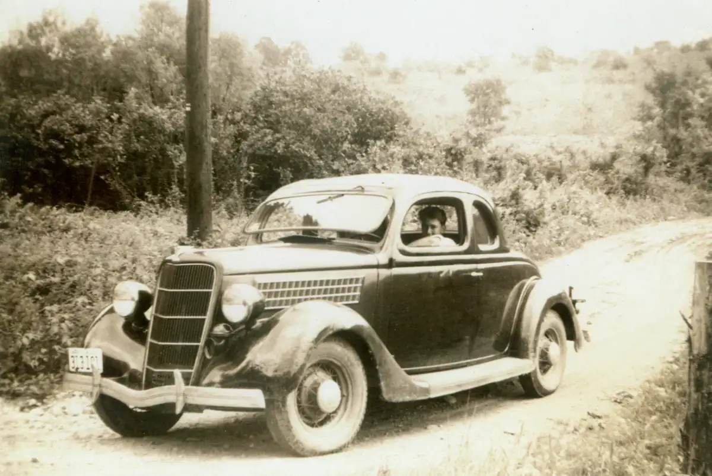

Home / Unknowns / unk000-00009
unk000-00009
← Return to Unknowns
← unk000-00008 unk000-00010 →
Dad had captioned this, "Mid 1930's auto." I can't tell who the driver is. It's possible this might be from the Brown photo collection, but I'd have to compare the license plate and car model to other pictures.

Actual size: 4.44" × 2.97" · Scanned at: 300 dpi · 1.19 MP (1332×891) · Image date: 8 Apr 2006 · Comment date: 8 Apr 2006
Copyright © 2005–2026 Thomas Krehbiel. Images are freely distributable for personal use. For more information about these images contact Thomas Krehbiel (tkrehbiel@gmail.com).
Photos were scanned at either 300dpi or 600dpi, depending on the quality of the photograph. Slides were scanned at 1800dpi. Documents were scanned at 100dpi or 150dpi. Photoshop enhancements: most images have had their contrast improved. Some color photos were corrected to restore color balance. Some blurry images were mildly sharpened. Occasionally dust, scratches, and blemishes were removed digitally.
{kind=link}